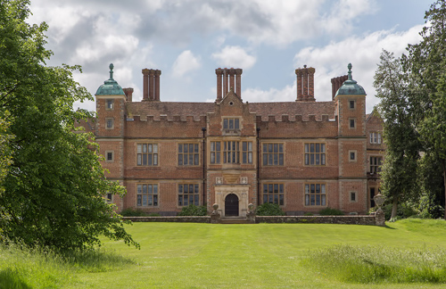
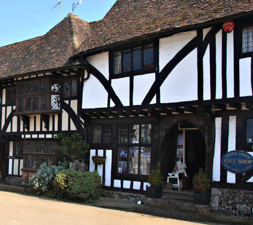
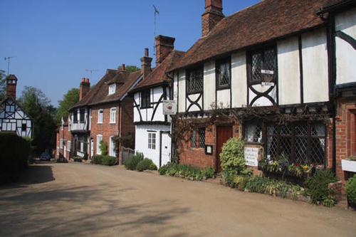
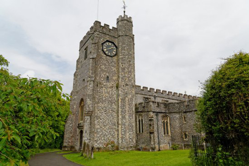

Chilham Manor, between Ashford and Canterbury, was used as 'Simeon Lee's house'. Completed in 1616 for Sir Dudley Digges, it was thought to have been designed by Inigo Jones but is now thought to be by Nicholas Stone, a master mason who had worked under Jones' direction at Holyrood Palace and at the Whitehall Banqueting House. The original gardens are said to have been laid out by John Tradescant the Elder.

A house in Chilham, Kent used as 'Supt. Sugden's home'.

Chilham Village Pub.

Chilham Church.